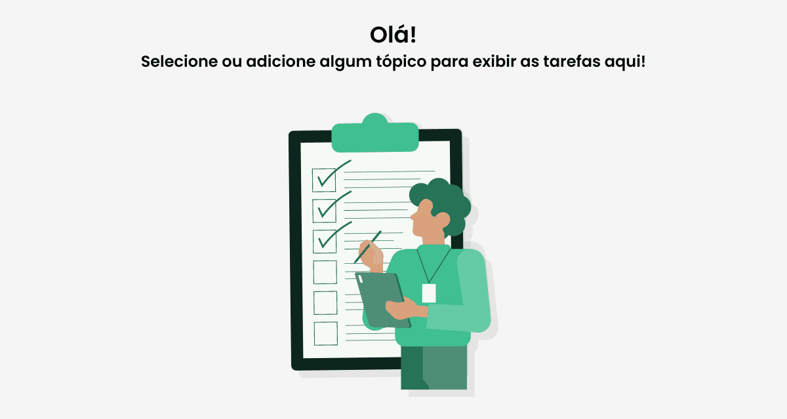

{{ task.name }}
{{ getPriorityText(task.priority) }}
Nenhuma tarefa para esse filtro




{{ toast.type && toast.type == 'error' ? 'Erro' : 'Sucesso' }}
{{ toast.text && toast.text }}
{{ task.name }}
{{ getPriorityText(task.priority) }}
Nenhuma tarefa para esse filtro
Concluídas ({{ priorityCount.completed }})
Alta prioridade ({{ priorityCount.high }})
Média prioridade ({{ priorityCount.medium }})
Baixa prioridade ({{ priorityCount.small }})
{{ task.topic_name }}
{{ task.name }}
Nenhuma tarefa na coluna


Comentário da tarefa: